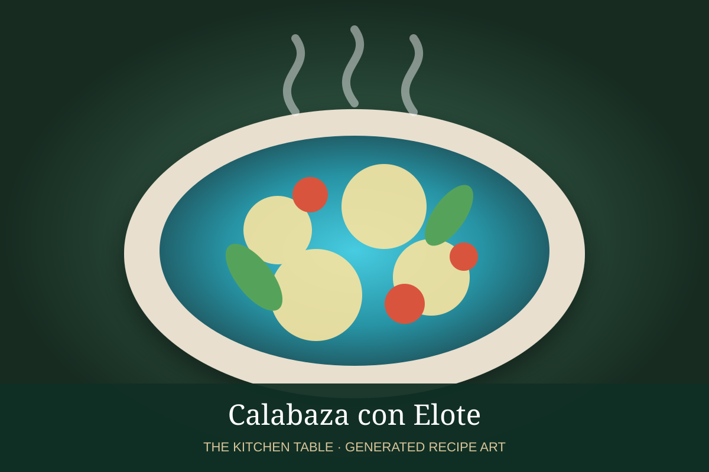

← Back to all recipes
SQUASH · MEXICAN
Calabaza con Elote
Mexican squash and corn sautéed with tomato, peppers, onion, and herbs.
30 minServes 6

Photo: Hogarmania
Ingredients
- 4 zucchini or Mexican squash, diced
- 2 cups corn kernels
- 1/2 onion, diced
- 2 Roma tomatoes, diced
- 1 poblano or bell pepper, diced
- 1 tbsp oil
- 1/2 tsp oregano
- Salt and pepper
Preparation
- Cook onion and pepper in oil until soft.
- Add squash and corn and sauté 5 minutes.
- Add tomatoes, oregano, salt, and pepper.
- Cook until squash is tender but still holds shape.